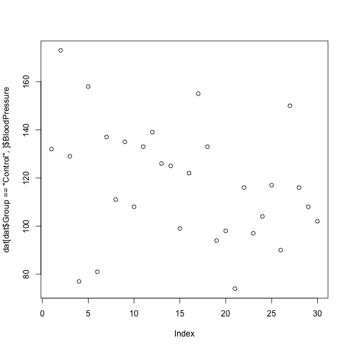

Programming with R
Addressing data
Learning Objectives
- Understand the 3 different ways R can address data inside a data frame.
- Combine different methods for addressing data with the assignment operator to update subsets of data
R is a powerful language for data manipulation. There are 3 main ways for addressing data inside R objects.
- By index (slicing)
- By logical vector
- By name (columns only)
Lets start by loading some sample data:
dat<-read.csv(file='data/sample.csv',header=TRUE, stringsAsFactors=FALSE)Lets take a look at this data.
class(dat)[1] "data.frame"
R has loaded the contents of the .csv file into a variable called dat which is a data frame.
dim(dat)[1] 100 9
The data has 100 rows and 9 columns.
head(dat) ID Gender Group BloodPressure Age Aneurisms_q1 Aneurisms_q2
1 Sub001 m Control 132 16.0 114 140
2 Sub002 m Treatment2 139 17.2 148 209
3 Sub003 m Treatment2 130 19.5 196 251
4 Sub004 f Treatment1 105 15.7 199 140
5 Sub005 m Treatment1 125 19.9 188 120
6 Sub006 M Treatment2 112 14.3 260 266
Aneurisms_q3 Aneurisms_q4
1 202 237
2 248 248
3 122 177
4 233 220
5 222 228
6 320 294
The data is the results of an (not real) experiment, looking at the number of aneurisms that formed in the eyes of patients who undertook 3 different treatments.
Addressing by Index
Data can be accessed by index. We have already seen how square brackets [ can be used to subset (slice) data. The generic format is dat[row_numbers,column_numbers].
Challenge - Selecting values 1
What will be returned by dat[1,1]?
dat[1,1][1] "Sub001"
If we leave out a dimension R will interpret this as a request for all values in that dimension.
Challenge - Selecting values 2
What will be returned by dat[,2]?
The colon : can be used to create a sequence of integers.
6:9[1] 6 7 8 9
Creates a vector of numbers from 6 to 9.
This can be very useful for addressing data.
Challenge - Subsetting with sequences
Use the colon operator to index just the aneurism count data (columns 6 to 9).
Finally we can use the c() (combine) function to address non-sequential rows and columns.
dat[c(1,5,7,9),1:5] ID Gender Group BloodPressure Age
1 Sub001 m Control 132 16.0
5 Sub005 m Treatment1 125 19.9
7 Sub007 f Control 173 17.7
9 Sub009 m Treatment2 131 19.4
Returns the first 5 columns for patients in rows 1,5,7 & 9
Challenge - Subsetting non-sequential data
Return the Age and Gender values for the first 5 patients.
Addressing by Name
Columns in an R data frame are named.
names(dat)[1] "ID" "Gender" "Group" "BloodPressure"
[5] "Age" "Aneurisms_q1" "Aneurisms_q2" "Aneurisms_q3"
[9] "Aneurisms_q4"
We usually use the $ operator to address a column by name
dat$Gender [1] "m" "m" "m" "f" "m" "M" "f" "m" "m" "f" "m" "f" "f" "m" "m" "m" "f"
[18] "m" "m" "F" "f" "m" "f" "f" "m" "M" "M" "f" "m" "f" "f" "m" "m" "m"
[35] "m" "f" "f" "m" "M" "m" "f" "m" "m" "m" "f" "f" "M" "M" "m" "m" "m"
[52] "f" "f" "f" "m" "f" "m" "m" "m" "f" "f" "f" "f" "M" "f" "m" "f" "f"
[69] "M" "m" "m" "m" "F" "m" "m" "f" "M" "M" "M" "f" "m" "M" "M" "m" "m"
[86] "f" "f" "f" "m" "m" "f" "m" "F" "f" "m" "m" "F" "m" "M" "M"
Named addressing can also be used in square brackets.
head(dat[,c('Age','Gender')]) Age Gender
1 16.0 m
2 17.2 m
3 19.5 m
4 15.7 f
5 19.9 m
6 14.3 M
Logical Indexing
A logical vector contains only the special values TRUE & FALSE.
c(TRUE,TRUE,FALSE,FALSE,TRUE)[1] TRUE TRUE FALSE FALSE TRUE
Logical vectors can be created using relational operators e.g. <, >, ==, !=, %in%.
x<-c(1,2,3,11,12,13)
x < 10[1] TRUE TRUE TRUE FALSE FALSE FALSE
x %in% 1:10[1] TRUE TRUE TRUE FALSE FALSE FALSE
We can use logical vectors to select data from a data frame.
index <- dat$Group == 'Control'
dat[index,]$BloodPressure [1] 132 173 129 77 158 81 137 111 135 108 133 139 126 125 99 122 155
[18] 133 94 98 74 116 97 104 117 90 150 116 108 102
Often this operation is written as one line of code:
plot(dat[dat$Group=='Control',]$BloodPressure)
Challenge - Using logical indexes
- Create a scatterplot showing BloodPressure for subjects not in the control group.
- How many ways are there to index this set of subjects?
Combining Indexing and Assignment
The assignment operator <- can be combined with indexing.
x<-c(1,2,3,11,12,13)
x[x < 10] <- 0
x[1] 0 0 0 11 12 13
Challenge - Updating a subset of values
In this dataset, values for Gender have been recorded as both uppercase M, F and lowercase m,f. Combine the indexing and assignment operations to convert all values to lowercase.